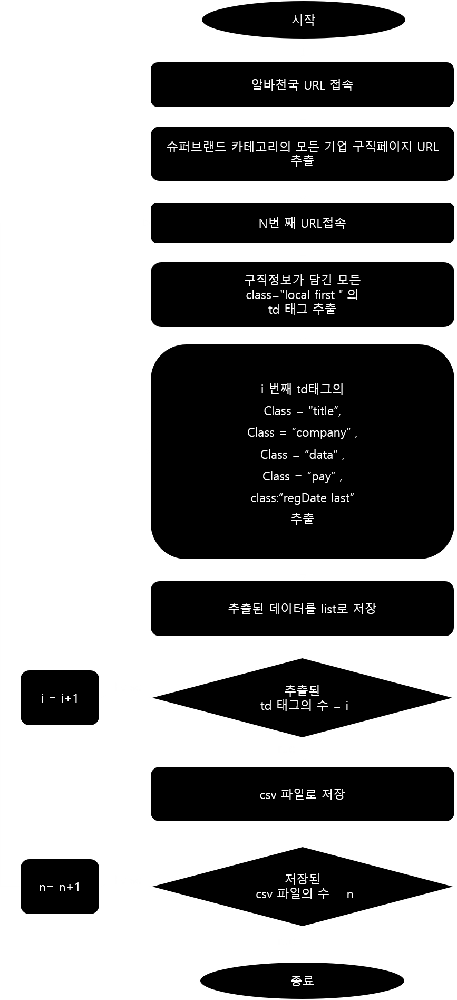

알바천국 자동화 웹스크랩핑
본 프로그램은 노마드코더 'Python으로 웹 스크래퍼 만들기'강좌 이후의 코딩 첼린지의 일환으로 제작되었습니다. 첼린지 이후에 BeautifulSoup 라이브러리를 이용해 HTML상의 데이터를 추출하는법, 추출한 데이터를 리스트로 묶는법,CSV 파일로 저장하는 법등 데이터 스크롤링의 전반적인 이해도를 향상시킬 수 있었습니다.
logic

Demonstrate video
Link